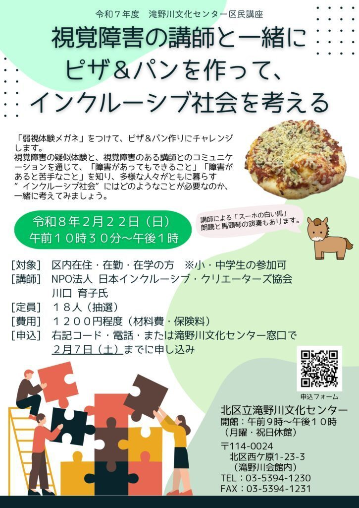

2026年の活動
2026年の活動の記録です（1件）。

-
2026年2月
北区立滝野川文化センター区民講座にて、弱視体験メガネをつけてピザとパンを作る体験や、アイマスクをつけて点字ブロックリレーなどのワークショップを開催しました。お子様にもご参加いただきワイワイ楽しくご体験頂きました。
2026年の活動の記録です（1件）。

2026年2月
北区立滝野川文化センター区民講座にて、弱視体験メガネをつけてピザとパンを作る体験や、アイマスクをつけて点字ブロックリレーなどのワークショップを開催しました。お子様にもご参加いただきワイワイ楽しくご体験頂きました。